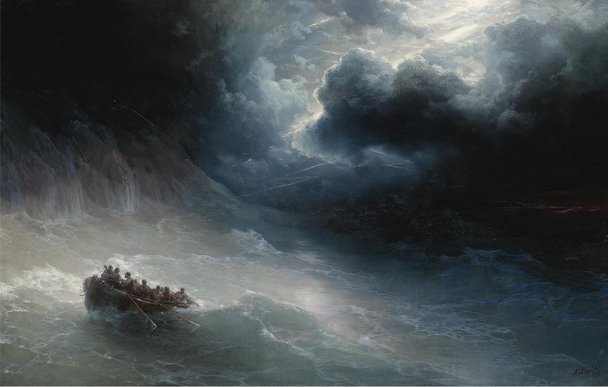
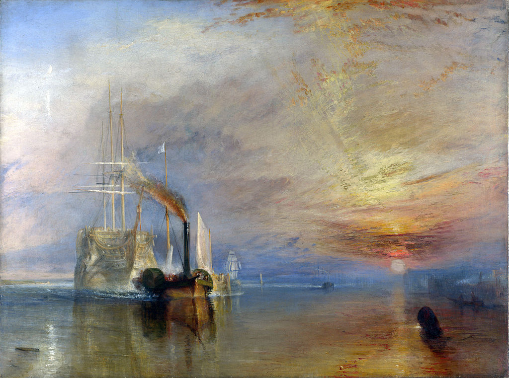

Пейзажисты

Гнев морей
Гнев морей — картина русского художника Ивана
Константиновича Айвазовского, написанная в 1886 году. Холст,
масло.Изображено штормовое море вблизи скал, очертания которых
теряются во мраке. Бушующее море сливается с грозовым небом. Из-за
темных туч сверкают молнии. Волны бьются о высокий берег и стекают по
скалам. Атмосфера бури,гнева моря, передана особенно мощно,что зритель
будто слышит грохот волн/

Впечатление. Восходящее солнце
Впечатление. Восходящее солнце (фр. Impression,
soleillevant)
— картина Клода Моне, написанная в 1872 году с натуры в старом
аванпорте Гавра и давшая название художественному направлению
«импрессионизм» Картина написана с натуры в старом аванпорте Гавра. В
этом городе Моне вырос и впервые осознал себя художником. Каждая
секунда восхода солнца уникальна и неповторима, утверждал Моне.

Последний рейс корабля Отважный
Последний рейс корабля Отважный — картина английского
живописца Уильяма Тёрнера, написанная в 1839 году. На полотне
изображён последний рейс участника Трафальгарской битвы, боевого
корабля английского флота «Отважный». Паровой буксир тянет старое
судно в доки, где впоследствии оно будет разобрано. Впервые выставлена
в Королевской академии художеств в 1839 году.Оригинал находится в
частной коллекции.